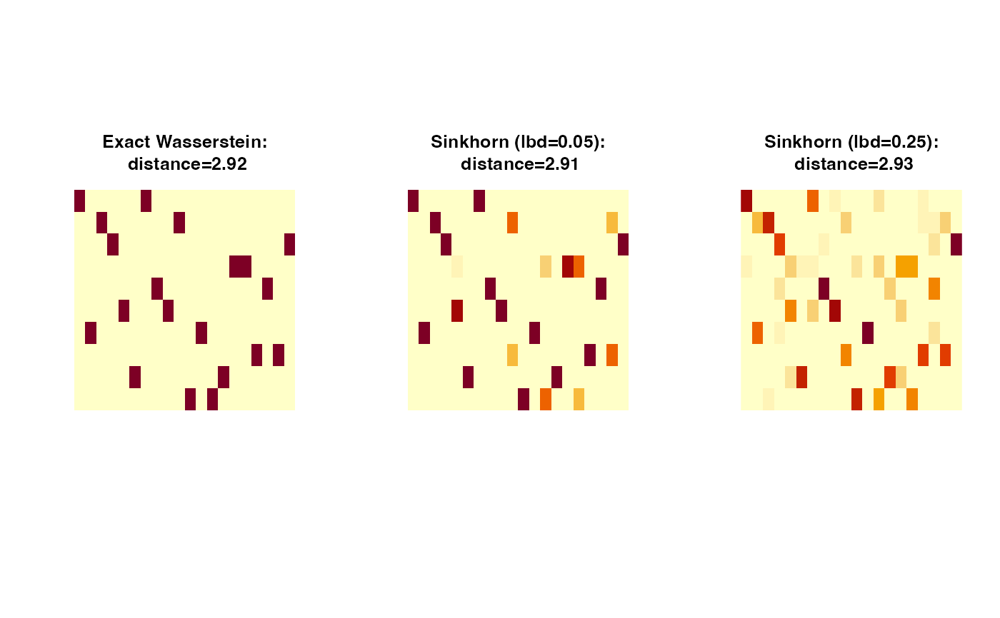

Wasserstein Distance via Entropic Regularization and Sinkhorn Algorithm
sinkhorn.RdTo alleviate the computational burden of solving the exact optimal transport problem via linear programming, Cuturi (2013) introduced an entropic regularization scheme that yields a smooth approximation to the Wasserstein distance. Let \(C:=\|X_m - Y_n\|^p\) be the cost matrix, where \(X_m\) and \(Y_n\) are the observations from two distributions \(\mu\) and \(nu\). Then, the regularized problem adds a penalty term to the objective function: $$ W_{p,\lambda}^p(\mu, \nu) = \min_{\Gamma \in \Pi(\mu, \nu)} \langle \Gamma, C \rangle + \lambda \sum_{m,n} \Gamma_{m,n} \log (\Gamma_{m,n}), $$ where \(\lambda > 0\) is the regularization parameter and \(\Gamma\) denotes a transport plan. As \(\lambda \rightarrow 0\), the regularized solution converges to the exact Wasserstein solution, but small values of \(\lambda\) may cause numerical instability due to underflow. In such cases, the implementation halts with an error; users are advised to increase \(\lambda\) to maintain numerical stability.
Usage
sinkhorn(X, Y, p = 2, wx = NULL, wy = NULL, lambda = 0.1, ...)
sinkhornD(D, p = 2, wx = NULL, wy = NULL, lambda = 0.1, ...)Arguments
- X
an \((M\times P)\) matrix of row observations.
- Y
an \((N\times P)\) matrix of row observations.
- p
an exponent for the order of the distance (default: 2).
- wx
a length-\(M\) marginal density that sums to \(1\). If
NULL(default), uniform weight is set.- wy
a length-\(N\) marginal density that sums to \(1\). If
NULL(default), uniform weight is set.- lambda
a regularization parameter (default: 0.1).
- ...
extra parameters including
- maxiter
maximum number of iterations (default: 496).
- abstol
stopping criterion for iterations (default: 1e-10).
- D
an \((M\times N)\) distance matrix \(d(x_m, y_n)\) between two sets of observations.
Value
a named list containing
- distance
\(\mathcal{W}_p\) distance value.
- iteration
the number of iterations it took to converge.
- plan
an \((M\times N)\) nonnegative matrix for the optimal transport plan.
References
Cuturi M (2013). “Sinkhorn distances: Lightspeed computation of optimal transport.” In Proceedings of the 26th international conference on neural information processing systems - volume 2, NIPS'13, 2292–2300.
Examples
# \donttest{
#-------------------------------------------------------------------
# Wasserstein Distance between Samples from Two Bivariate Normal
#
# * class 1 : samples from Gaussian with mean=(-1, -1)
# * class 2 : samples from Gaussian with mean=(+1, +1)
#-------------------------------------------------------------------
## SMALL EXAMPLE
set.seed(100)
m = 20
n = 10
X = matrix(rnorm(m*2, mean=-1),ncol=2) # m obs. for X
Y = matrix(rnorm(n*2, mean=+1),ncol=2) # n obs. for Y
## COMPARE WITH WASSERSTEIN
outw = wasserstein(X, Y)
skh1 = sinkhorn(X, Y, lambda=0.05)
skh2 = sinkhorn(X, Y, lambda=0.25)
## VISUALIZE : SHOW THE PLAN AND DISTANCE
pm1 = paste0("Exact Wasserstein:\n distance=",round(outw$distance,2))
pm2 = paste0("Sinkhorn (lbd=0.05):\n distance=",round(skh1$distance,2))
pm5 = paste0("Sinkhorn (lbd=0.25):\n distance=",round(skh2$distance,2))
opar <- par(no.readonly=TRUE)
par(mfrow=c(1,3), pty="s")
image(outw$plan, axes=FALSE, main=pm1)
image(skh1$plan, axes=FALSE, main=pm2)
image(skh2$plan, axes=FALSE, main=pm5)

par(opar)
# }